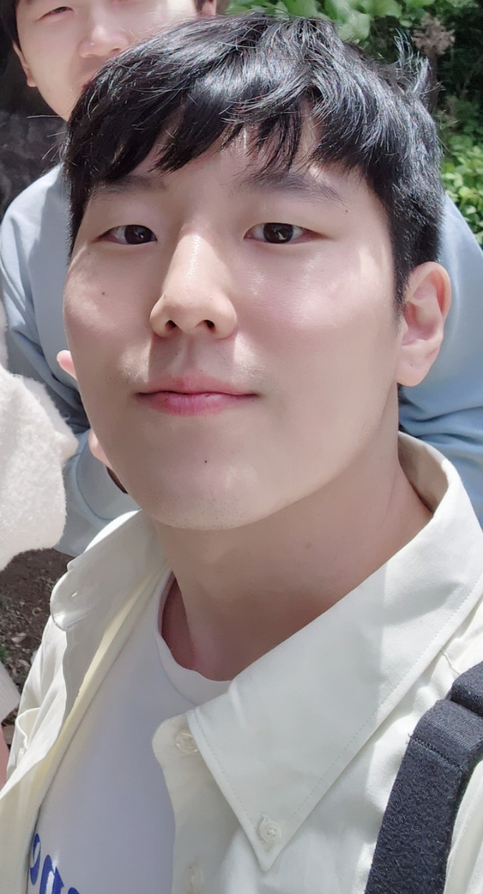

Eungwang Seo (Harry)
Welcome, I am a final-year PhD candidate at the Institute for Gravitational Research. I use gravitationally lensed messengers to probe the evolution of the Universe and constrain the properties of foreground lenses and background sources.
Move your cursor. It is a lens, and the stars bend around it.
